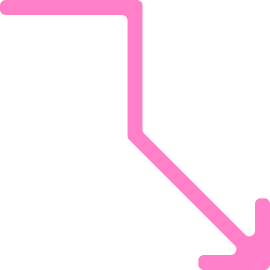

궤적 그리기Create Trajectories

사진의 색과 선에서 궤적을 그리고 있습니다.
궤적 그리기 소개
‘궤적 그리기’는 서울대학교 80주년 개교를 기념하여 미술대학에서 주최한 심포지엄 <10년의 기록, 10년의 비전>의 참여 디자인 프로그램이다.
8개의 학과와 연합 전공은 8개의 화살표가 되어, 새로운 궤적을 만들어낸다. 참가자가 입력한 이미지의 값에 따라, 각기 다른 화살표 조합이 생겨난다.
이 웹사이트는 크리스 하마모토와 그의 연구원 김연주, 이정아가 함께 만들었다.
‘Create Trajectories’ is a participatory design program for <A Decade of Records, A Decade of Vision>, a symposium organized by the College of Fine Arts to commemorate the 80th anniversary of Seoul National University.
The eight departments and interdisciplinary programs take the form of eight arrows, coming together to create new trajectories. Different combinations of arrows are generated based on values derived from images uploaded by participants.
This website was created by Chris Hamamoto together with members of his research team, Yeonjoo Kim and Jungah Lee.